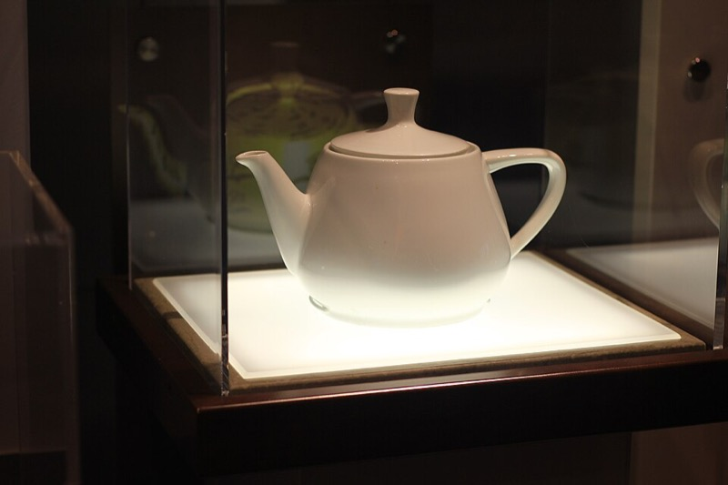
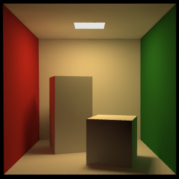
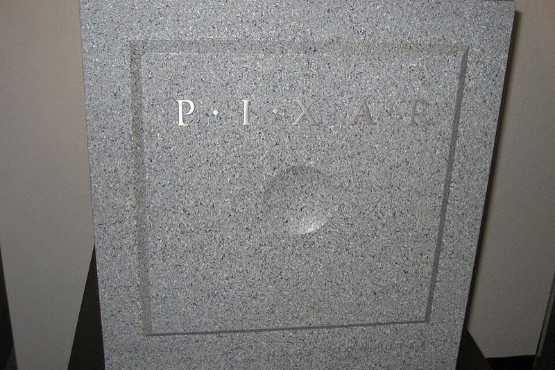

A History of Computer Graphics · All chapters.
Further contributors, side notes and secondary sources for the problems of Sections 4 and 6 of A History of Computer Graphics, under the same problem headings.
Main text: interactive drawing.
Bresenham’s line algorithm, published by Jack Bresenham of International Business Machines (IBM) in the IBM Systems Journal in 1965, was written for a pen plotter, since there were no raster screens to draw on.
Main text: free-form curves.
Main source: Farin, “A History of Curves and Surfaces in CAGD” (computer-aided geometric design), 2002 (author copy). Ferguson curves and bicubic patches (1964, James Ferguson, Boeing) interpolated parametric cubics through data points (“Multivariable curve interpolation,” Journal of the ACM 11(2), 1964; ACM is the Association for Computing Machinery). The Coons patch (1967, Steven Coons, Massachusetts Institute of Technology (MIT) Project MAC) filled a surface between four boundary curves (MAC-TR-41, “Surfaces for computer-aided design of space forms”). A. Robin Forrest brought Bézier’s curves to the research community (Computer Journal 15(1), 1972). On B-splines, Riesenfeld’s 1973 Syracuse thesis and Gordon and Riesenfeld’s chapter of 1974 followed de Boor, Gordon at General Motors Research (“B-spline curves and surfaces”). By Farin’s account Boeing adopted rational B-splines to unify its conic and spline software, and Boeing, the Structural Dynamics Research Corporation (SDRC) and Unigraphics pushed NURBS (non-uniform rational B-splines) into the Initial Graphics Exchange Specification (IGES) standard.
Main text: visibility.
Quantitative invisibility (1967, Arthur Appel, IBM) counted how many surfaces hide each stretch of a line (Appel, 1967). Area subdivision (1969, John Warnock, University of Utah) subdivided the screen until each region was simple (Utah TR 4-15). The scan-line visible-surface algorithm (1970, Gary Watkins, Utah) worked one scan line at a time, designed for hardware (Utah report UTEC-CSc-70-101). In 1974 Sutherland, Robert Sproull and Robert Schumacker compared ten such algorithms in the journal ACM Computing Surveys and showed that they “differ mainly in how they sort” (“A characterization of ten hidden-surface algorithms”).
Wolfgang Straßer reached the z-buffer idea independently in his 1974 thesis at the Technische Universität (TU) Berlin, under Wolfgang Giloi (Eurographics obituary).
Main text: clipping.
Cohen-Sutherland line clipping is documented only in later textbooks (for instance Newman and Sproull, 1973); no paper by its inventors is known.
Main text: surface detail.
Environment mapping (1976, Jim Blinn and Martin Newell, Utah) took mirror reflections from a stored picture of the surroundings (“Texture and reflection in computer generated images,” Communications of the ACM (CACM) 19(10), 1976). SIGGRAPH, the ACM Special Interest Group on Computer Graphics and Interactive Techniques, is also the group’s annual conference, held since 1974. Cube environment maps (1986, Ned Greene) gave environment maps the form hardware uses (IEEE Computer Graphics and Applications (CG&A) 6(11), 1986), and Heckbert surveyed the whole thread in the same issue (“Survey of texture mapping”).

Main text: computational geometry.
Preparata and Shamos date the name of the discipline to Shamos’s paper at the 1975 ACM Symposium on Theory of Computing (STOC) (“Geometric complexity”; see Section 1 of the chapter for the older, spline meaning of the phrase). Voronoi diagrams later served surface reconstruction: the crust algorithm (1998, Nina Amenta, Marshall Bern and Manolis Kamvysselis, Xerox Palo Alto Research Center (PARC)) reconstructed a surface from sample points with guarantees (SIGGRAPH 1998). The design of CGAL, with exact geometric predicates and a kernel of primitives shared by its algorithms, is described in Fabri et al., “On the design of CGAL,” Software: Practice and Experience 30(11), 2000; the project site gives its copyright from 1995 (cgal.org).
Main text: character animation.
The principles of traditional animation applied to 3D (1987, John Lasseter, Pixar; SIGGRAPH 1987); and pose space deformation (2000, J. P. Lewis, Matt Cordner and Nickson Fong), which named and fixed the artifacts of linear blend skinning (SIGGRAPH 2000).
Main text: motion capture.
Leland Stanford hired Muybridge in 1872 to settle whether all four hooves of a trotting horse leave the ground at once (description of the Library of Congress print on Wikimedia Commons). A survey of digital representations of human movement (1979, Norman Badler and Stephen Smoliar; ACM Computing Surveys 11(1)) preceded the first capture systems; Sturman’s history (SIGGRAPH 1994 course) covers optical capture and performance animation from 1983 to 1993. Vicon lists the University of Strathclyde, the University of Western Australia and the Saitama Rehabilitation Center among the early adopters of the 1980s, mostly for gait analysis (Vicon). Captured motion was also searched and recombined for interactive avatars (2002, Jehee Lee, Jinxiang Chai, Paul Reitsma, Jessica Hodgins and Nancy Pollard, Carnegie Mellon University (CMU); ACM Transactions on Graphics (TOG) 21(3)).
Main text: reflection models.
The Trowbridge-Reitz distribution (1975), later renamed GGX, is the one most current engines use (Journal of the Optical Society of America (JOSA) 65(5), 1975). The Cook-Torrance model appeared first at SIGGRAPH 1981 (doi), before its journal version of 1982.
Main text: measuring reflectance.
Nicodemus had proposed the nomenclature of the bidirectional reflectance distribution function (BRDF) in 1970 (“Reflectance nomenclature and directional reflectance and emissivity,” Applied Optics 9(6)); the 1977 monograph, with J. C. Richmond, J. J. Hsia, I. W. Ginsberg and T. Limperis, fixed the definitions that graphics later adopted. Ward’s imaging gonioreflectometer recorded the reflected hemisphere in one camera image instead of moving a detector, and his anisotropic Gaussian model was fit to its data. The Cornell method was published in fuller form in Applied Optics 39(16), 2000. The light-stage team was Paul Debevec, Tim Hawkins, Chris Tchou, Haarm-Pieter Duiker, Westley Sarokin and Mark Sagar; the later light stages were built at the University of Southern California’s Institute for Creative Technologies (USC ICT). The Mitsubishi Electric Research Laboratories (MERL) data are now distributed through Zenodo (doi:10.5281/zenodo.8101680).
Main text: shadows.
Shadow maps were in Pixar’s production rendering by 1987.
Main text: aliasing.
Motion blur (1983, Michael Potmesil and Indranil Chakravarty) applied the idea of filtering in time (SIGGRAPH 1983). Hardware multisample antialiasing is described in Akeley’s 1993 paper on the RealityEngine (main text, Section 6).
Main text: natural shapes.
Loren Carpenter, then at Boeing, showed a fractal-landscape flyover film, Vol Libre, at SIGGRAPH 1980; its frames are reported to have taken 20 to 40 minutes each on a VAX-11/780.
Main text: procedural modeling.
Before Prusinkiewicz’s work, Alvy Ray Smith (Lucasfilm) used formal languages and “graftals” for plants (“Plants, fractals, and formal languages,” SIGGRAPH 1984), and Jules Bloomenthal (NYIT) modeled a maple tree with generalized cylinders (“Modeling the mighty maple,” SIGGRAPH 1985). SideFX reports Academy recognition for Houdini in 1998, 2003, 2012, 2019 and 2023, and the Academy Award of Merit in 2018 (SideFX).
Main text: subdivision.
Corner cutting (1974, George Chaikin) made smooth curves by repeatedly cutting corners (Computer Graphics and Image Processing 3(4), 1974). Doo-Sabin subdivision (1978, Daniel Doo and Malcolm Sabin) appeared in the same issue of Computer-Aided Design as Catmull-Clark, with an analysis at irregular points (doi). The Academy of Motion Picture Arts and Sciences gave Catmull, DeRose and Jos Stam a Technical Achievement Award for subdivision surfaces in 2006.
Main text: ray tracing.
Refraction (1979, Douglas Kay and Donald Greenberg, Cornell) rendered transparent objects that bend light (SIGGRAPH 1979). Bounding-volume hierarchies for rays (1980, Steven Rubin and Turner Whitted, Bell Labs) let rays skip most of a scene (SIGGRAPH 1980).
University departments and laboratories: MIT (Lincoln Laboratory and Project MAC), Harvard, Utah, Cambridge, Cornell, Syracuse, Simon Fraser, TU Berlin. Corporate research laboratories and companies: IBM, Bell Labs, Evans & Sutherland, Boeing, General Motors Research, Citroën and Renault, and by the end of the period Lucasfilm. Funders: the Information Processing Techniques Office of the Advanced Research Projects Agency (ARPA) and the Office of Naval Research (ONR) above all. The venues moved from the Joint Computer Conferences of the American Federation of Information Processing Societies (AFIPS) and CACM to ACM Computing Surveys, and from 1974 to SIGGRAPH, which has carried most of the field’s papers since.
Main text: hardware pipelines.
Pixel-Planes (1985, Henry Fuchs, John Poulton, John Eyles and others, University of North Carolina (UNC) at Chapel Hill) put a processor behind every pixel (SIGGRAPH 1985). High-performance polygon rendering (1988, Kurt Akeley and Tom Jermoluk, Silicon Graphics (SGI)) described the architecture of SGI’s GT series (SIGGRAPH 1988).
Main text: implicit surfaces.
Polygonization of implicit surfaces (1988, Jules Bloomenthal, Xerox PARC; Computer Aided Geometric Design 5(4)); particles that sample and control implicit surfaces (1994, Andrew Witkin and Paul Heckbert, CMU; SIGGRAPH 1994); and smoke on a grid with vorticity confinement (2001, Ronald Fedkiw, Jos Stam and Henrik Wann Jensen; SIGGRAPH 2001), the kind of density field VDB stores. Museth presented the data structure first as DB+Grid (SIGGRAPH 2011 talk); OpenVDB is now maintained by the Academy Software Foundation under the Apache-2.0 license.
Main text: compositing.
The alpha channel itself, a coverage value stored with each pixel, is credited by Smith to Catmull and himself at the New York Institute of Technology (NYIT) in the 1970s (Smith 1995 as cited by Carlson).
Main text: radiosity.
Non-diffuse radiosity (1986, David Immel, Michael Cohen and Donald Greenberg) extended radiosity to glossy surfaces (SIGGRAPH 1986).

Main text: texture.
In 1997 Ken Perlin of New York University (NYU) received an Academy Technical Achievement Award for his noise (Perlin’s page), and in 2002 he revised it with a better interpolant and gradient set (“Improving noise,” ACM TOG 21(3)). Turk’s and Witkin and Kass’s reaction-diffusion papers appeared at the same conference (SIGGRAPH 1991). Heeger and Bergen also presented their method at the IEEE International Conference on Image Processing (ICIP 1995).
Main text: points.
Point sample rendering (1998, J. P. Grossman and William Dally; Eurographics Rendering Workshop 1998) and surfels (2000, Hanspeter Pfister, Matthias Zwicker, Jeroen van Baar and Markus Gross; SIGGRAPH 2000) came between the Levoy-Whitted report and surface splatting. The same group extended the elliptical weighted average (EWA) filter to volumes (“EWA volume splatting,” IEEE Visualization 2001).
Main text: the rendering equation.
Immel, Cohen and Greenberg gave an independent general formulation, in radiosity form, at the same conference as Kajiya (SIGGRAPH 1986). Bidirectional path tracing (Eric Veach and Leonidas Guibas, Stanford, Eurographics Rendering Workshop 1994, published 1995; doi) and Metropolis light transport (1997, Veach and Guibas, Stanford; SIGGRAPH 1997) completed the set of estimators.
Main text: physically based animation.
Rigid bodies with friction (1988, James Hahn; SIGGRAPH 1988); spacetime constraints (1988, Andrew Witkin and Michael Kass; SIGGRAPH 1988); resting contact solved analytically (1989, David Baraff; SIGGRAPH 1989); and liquids from the Navier-Stokes equations (1996, Nick Foster and Dimitri Metaxas; Graphical Models and Image Processing 58(5)). The Academy gave Technical Achievement Awards to Platt and Terzopoulos for cloth in 2006 and to Stam and colleagues for Maya Fluids in 2008.
Main text: 3D scanning.
Earlier coded-light work by Martin Altschuler and colleagues projected a laser dot matrix (Society of Photo-Optical Instrumentation Engineers (SPIE) 1979). Surface reconstruction from unorganized points (1992, Hugues Hoppe, Tony DeRose, Tom Duchamp, John McDonald and Werner Stuetzle; SIGGRAPH 1992) fit a signed distance to scattered points. Volumetric range merging (1996, Brian Curless and Marc Levoy, Stanford; SIGGRAPH 1996) is the method the Stanford repository calls vrip; its Happy Buddha and Dragon were acquired with Curless’s spacetime analysis and Lucy with the Stanford Large Statue Scanner built for the Digital Michelangelo Project (repository). The project scanned 10 statues, 2 building interiors and 1,163 fragments of the Forma Urbis Romae; the David alone gave about 2 billion polygons and 7,000 color images, with 30 people from Stanford and the University of Washington, in production from September 1998 to June 1999 (Levoy et al.; project page). Its images are all rights reserved. Screened Poisson reconstruction (2013, Kazhdan and Hoppe; ACM TOG 32(3)) added point constraints to the Poisson equation (the 2006 paper, author copy).
Main text: hair and fur.
Kajiya and Kay called their volume elements texels, three-dimensional texture cells holding density, a frame and a lighting model. The Marschner model separates three paths through the fiber: reflection at the surface (R), transmission through it (TT) and one internal reflection (TRT), which gives the colored secondary highlight.
Main text: non-photorealistic rendering.
Painterly rendering with curved strokes of several sizes (1998, Aaron Hertzmann, NYU; SIGGRAPH 1998); interactive technical illustration (1999, Bruce Gooch, Peter-Pike Sloan, Amy Gooch, Peter Shirley and Richard Riesenfeld, Utah; Symposium on Interactive 3D Graphics (I3D) 1999); and the Gooches’ textbook Non-Photorealistic Rendering (A K Peters, 2001).
Main text: captured light.
The Lumigraph (1996, Steven Gortler, Radek Grzeszczuk, Richard Szeliski and Michael Cohen, Microsoft Research) did what light field rendering did, with approximate geometry (SIGGRAPH 1996). Range scanning, volumetric merging, surface reconstruction and Facade are under 3D scanning and reconstruction.
Main text: consumer hardware.
Microsoft shipped Direct3D on 13 June 1996, listing the 3dfx Voodoo Graphics among the first accelerators. The GeForce 256 had nearly 23 million transistors; cards went on sale in October 1999 (press releases). DirectX 7, with hardware transform and lighting, shipped on 22 September 1999, and DirectX 8, with vertex and pixel shaders, on 9 November 2000. The GeForce3’s pixel stage was marketed as a “pixel shader,” while NVIDIA’s own 2008 retrospective calls it configurable and credits ATI’s Radeon 9700 (2002) with the first programmable floating-point pixel processor (Lindholm, Nickolls, Oberman and Montrym, “NVIDIA Tesla,” IEEE Micro, 2008). High-level shading languages followed: NVIDIA’s Cg (Mark, Glanville, Akeley and Kilgard, SIGGRAPH 2003) and the OpenGL Shading Language (GLSL), part of the OpenGL 2.0 specification of 22 October 2004.
Main text: path-traced films.
The Academy gave Arnold a Scientific and Engineering Award in 2017. Monsters University (2013) was the first Pixar feature with ray-traced global illumination. Manuka (Weta Digital) did spectral path tracing at film scale (TOG 2018). The participants’ overview is Christensen and Jarosz, “The path to path-traced movies,” 2016.
Main text: real-time ray tracing.
Two other denoisers of 2017: kernel-predicting networks for film frames (Steve Bako, Thijs Vogels and colleagues; TOG 36(4)) and a recurrent denoising autoencoder for interactive sequences (Chakravarty Alla Chaitanya and colleagues; TOG 36(4)).
Studios: Lucasfilm and Pixar, Walt Disney Animation Studios, Sony Pictures Imageworks, Weta Digital. Hardware companies: Silicon Graphics, 3dfx, ATI, NVIDIA. Software companies: Alias|Wavefront, Microsoft, Epic Games. Corporate and national research institutes: Xerox PARC, Bell Labs, Microsoft Research, NVIDIA Research, Disney Research, Inria in France and the Max Planck Institute for Informatics (MPI-Inf) in Germany. The university laboratories are Cornell, Stanford, UNC, Caltech, Berkeley and CMU. The venues are SIGGRAPH and ACM TOG, Eurographics and its journal Computer Graphics Forum, the Eurographics Symposium on Rendering (EGSR) and High Performance Graphics (HPG), and, for learned graphics, the computer-vision conferences Computer Vision and Pattern Recognition (CVPR) and the European Conference on Computer Vision (ECCV) and the machine-learning conferences Neural Information Processing Systems (NeurIPS), the International Conference on Machine Learning (ICML) and the International Conference on Learning Representations (ICLR).
Profiles of two organizations from the table in Section 13 of the chapter.
Main text: Utah.
David Evans was recruited to the University of Utah in 1965 to build a computer science department and concentrated it on graphics, with funding from ARPA’s Information Processing Techniques Office; Sutherland joined in 1968, and the two founded Evans & Sutherland the same year (Carlson). The program reported its work to ARPA in reports such as Evans’s Graphical Man/Machine Communications (1971). Utah work in the chapter includes Warnock’s and Watkins’s visible-surface algorithms, Gouraud and Phong shading, Catmull’s z-buffer and texture mapping, Blinn’s reflection models and bump mapping, Newell’s teapot and Loop subdivision. Its alumni founded or led companies: Catmull at Pixar, Warnock at Adobe, Jim Clark at Silicon Graphics (founded in 1981 or 1982; sources differ) and later Netscape, and Alan Kay at Xerox PARC; Jim Blinn went to the Jet Propulsion Laboratory of the National Aeronautics and Space Administration (NASA), and Nolan Bushnell, a Utah undergraduate of the period, founded Atari.
Main text: Pixar.
Lucasfilm’s computer division was formed in 1979 and spun off as Pixar in 1986, when Steve Jobs bought it (CHM, Carlson). Before it made films Pixar sold hardware: the Pixar Image Computer, announced as shipping on 11 May 1986, with 24 MB of “picture memory” for a 2,000 by 2,000 image in four 12-bit channels and a four-way parallel processor (Pixar press release). With Disney, Pixar built software on it to color hand-drawn animation digitally (the Computer Animation Production System, CAPS).

The people of Lucasfilm’s computer division and Pixar included Catmull, Smith, Cook, Carpenter, Porter, Duff, Reeves, and later Hanrahan.
The People and Organizations data also list organizations that have no row in the table of Section 13: the software companies Adobe, Autodesk, Softimage and Unity Technologies; the studios Information International Inc. (III), MAGI (Mathematical Applications Group Inc.), Digital Productions and Weta Digital; Disney Research, NVIDIA Research and the Fraunhofer Institute for Computer Graphics Research (IGD); and the IEEE VIS conference with the IEEE Transactions on Visualization and Computer Graphics (TVCG, from 1995).